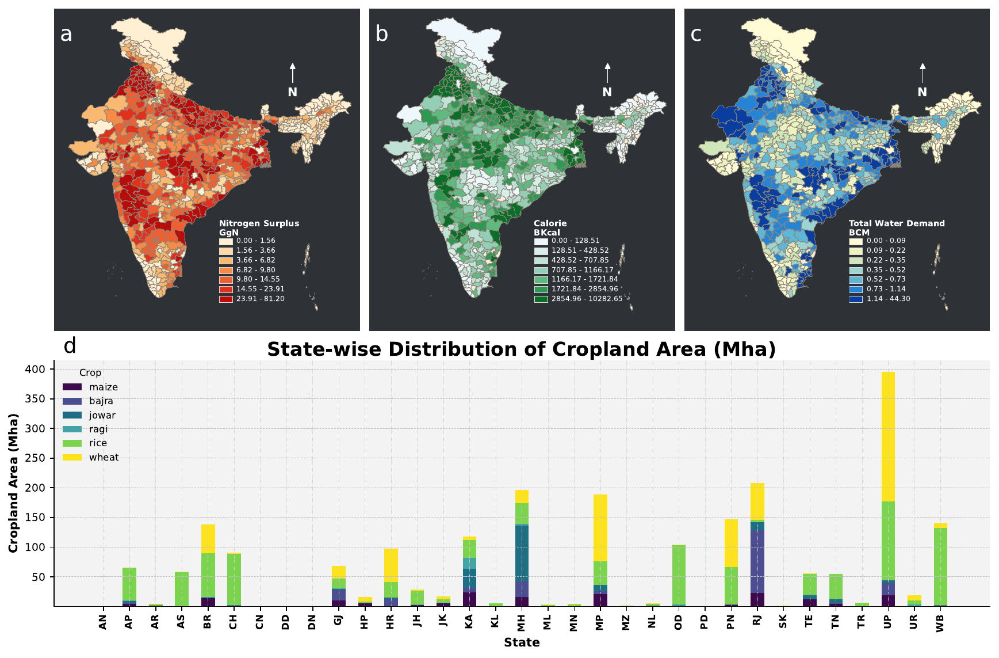
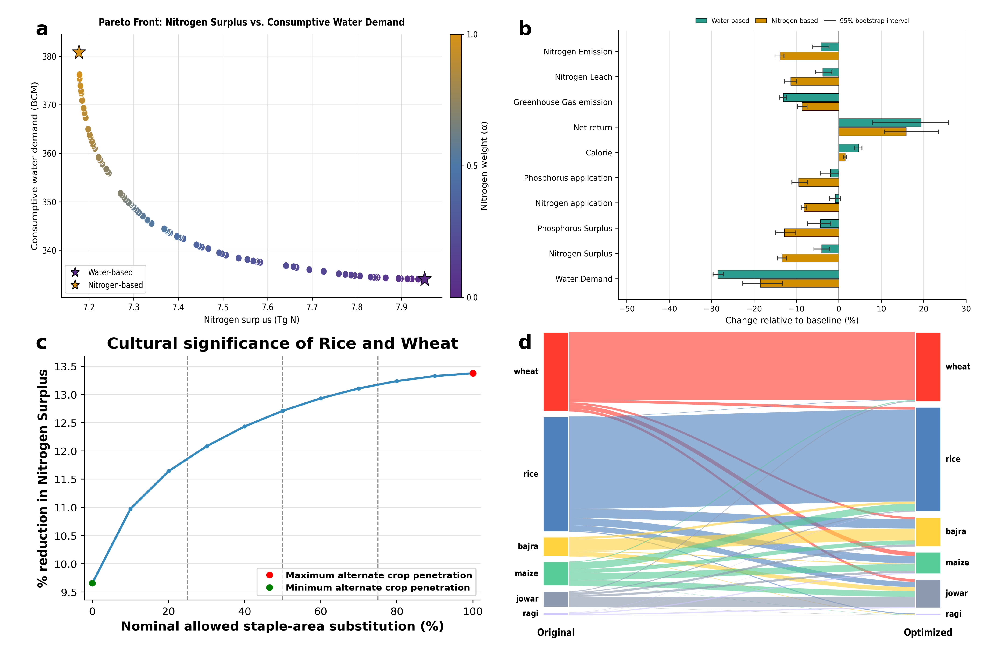
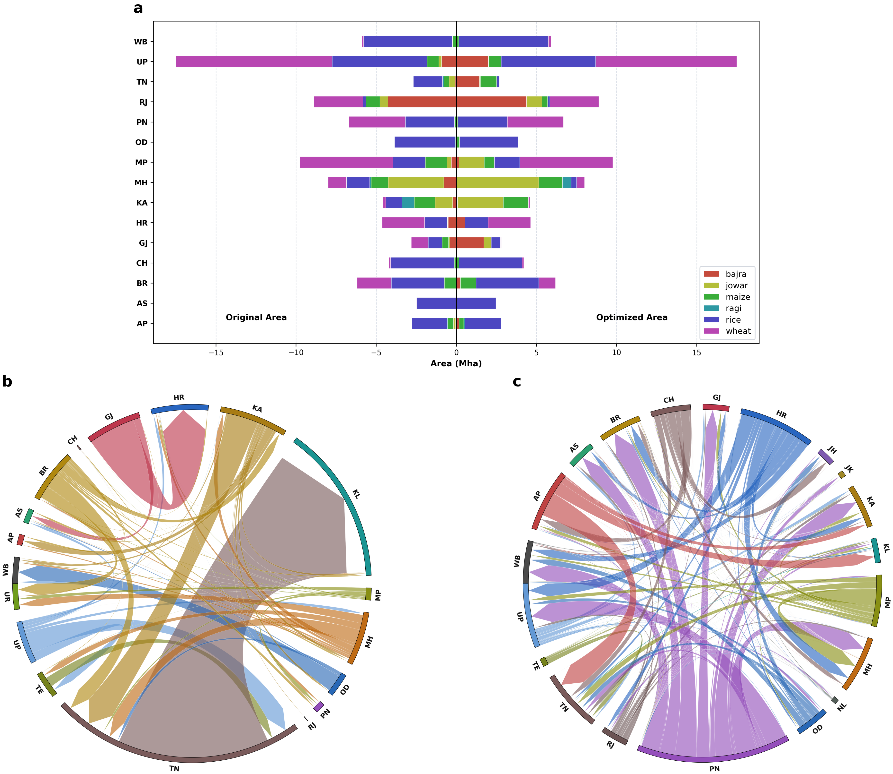

Audited Reproducibility Report
This HTML report tracks the canonical manuscript figures, cited supplementary figures, the source-data package, and the containerized rerun path.
Generated UTC: 2026-04-20T08:12:00.187621+00:00
Runner: code_final/run_final_revision2_batch.sh
Run mode: full
Repository root: .
Preview Panels
Figure 1 manuscript render

Figure 2 manuscript render

Figure 3 manuscript render

SI revenue robustness

SI Figure 2a frontier envelope

Canonical Main Outputs
| Artifact | Status | File | Type | Size | SHA-256 |
|---|---|---|---|---|---|
| Figure 1 manuscript PDF | present | figure1_main_revision2.pdf | 8180623 | 3c1ad2839a4ce55d | |
| Figure 1 manuscript PNG | present | figure1_main_revision2.png | png | 498866 | 4011c26e84d7c70a |
| Figure 2 manuscript PDF | present | figure2_main_revision2.pdf | 960636 | 3e77a2b44405ffe9 | |
| Figure 2 manuscript PNG | present | figure2_main_revision2.png | png | 1041218 | f41047f8026aad6d |
| Figure 3 manuscript PDF | present | figure3_main_revision2.pdf | 2577080 | 69f2043aa398d821 | |
| Figure 3 manuscript PNG | present | figure3_main_revision2.png | png | 2906569 | c6a2f0668f1f9e76 |
{kind=link}
{kind=link}
{kind=link}
Cited Supplementary Outputs
| Artifact | Status | File | Type | Size | SHA-256 |
|---|---|---|---|---|---|
| SI Figure S1 | present | si_s1_methodological_framework.png | png | 376913 | 2bd32827cb70a04c |
| SI seasonal Pareto PDF | present | si_s2_seasonal_pareto.pdf | 21923 | d4ea591eafc2bf5e | |
| SI seasonal trade-offs PDF | present | si_s3_seasonal_tradeoffs.pdf | 21068 | 57acff353fe6b5c3 | |
| SI cultural-retention PDF | present | si_s4_cultural_retention.pdf | 21968 | f8dbdcfbe4d0bb1e | |
| SI observed trade network PDF | present | si_s5_original_trade_network_clean.pdf | 4161291 | 668b172ed26624fa | |
| SI Figure S6 | present | si_s6_state_boundaries.pdf | 172632 | e7ccd5094598ff2c | |
| SI Figure S7 | present | si_s7_parametric_uncertainty.pdf | 126761 | a66289ee0350a9a2 | |
| SI Figure S8 | present | si_s8_kharif_bootstrap_uncertainty.png | png | 194901 | 815c626c9e110aba |
| SI Figure S9 | present | si_s9_rabi_bootstrap_uncertainty.png | png | 194613 | 470f169f6838392d |
| SI Figure S10 | present | si_s10_kharif_n_component_sensitivity.png | png | 223900 | 09275ce140b2cacd |
| SI Figure S11 | present | si_s11_rabi_n_component_sensitivity.png | png | 227501 | d6db5c5cd552b98e |
| SI Figure S12 | present | si_s12_n_strategy_ghg_components.jpg | jpg | 484934 | 0834fd61a7dec97d |
| SI Figure S13 | present | si_s13_water_strategy_ghg_components.jpg | jpg | 460332 | 130f2beb0bb28270 |
| SI Figure S14 | present | si_s14_spatial_n_application.png | png | 1457419 | a75aae7aa680a939 |
| SI Figure S15 | present | si_s15_image_gnm_partition.png | png | 3447785 | 00d01a4cc483c8fd |
| SI revenue robustness PDF | present | si_revenue_benchmark_robustness.pdf | 34418 | cf086ec8c373d74f | |
| SI MSP comparison Figure 2 PDF | present | si_msp_benchmark_figure2.pdf | 977844 | 103f599fa3132bf0 | |
| SI MSP comparison Figure 3 PDF | present | si_msp_benchmark_figure3.pdf | 2720942 | aaf99a573c47d62c | |
| SI Figure 2a frontier bootstrap PDF | present | si_figure2a_frontier_bootstrap.pdf | 548396 | 29a9be496cb3bbed | |
| SI seasonal substitution audit PDF | present | si_s21_seasonal_substitution_audit.pdf | 621358 | 40e93e9650cd0b2a |
{kind=link}
{kind=link}
{kind=link}
{kind=link}
{kind=link}
{kind=link}
{kind=link}
{kind=link}
{kind=link}
Source Data Package
| Artifact | Status | File | Type | Size | SHA-256 |
|---|---|---|---|---|---|
| Source Data workbook | present | Source Data.xlsx | xlsx | 637459 | c23fd29cab6d9e34 |
| Source Data zip | present | Source_Data_package.zip | zip | 862652 | 3675743074895447 |
| Source Data README | present | README.md | md | 8200 | b85b6fb056dfe457 |
Audit Notes
| Artifact | Status | File | Type | Size | SHA-256 |
|---|---|---|---|---|---|
| Figure 1 reproduction summary | present | figure1_reproduction_summary.md | md | 790 | 4b76f222b6496c37 |
| Release-figure verification report (Markdown) | present | release_figure_sync_report.md | md | 7969 | be591a47e79b770e |
| Release-figure verification report (JSON) | present | release_figure_sync_report.json | json | 9262 | 535a0fb837e13950 |
Workflow Files
| Artifact | Status | File | Type | Size | SHA-256 |
|---|---|---|---|---|---|
| Container Dockerfile | present | Dockerfile | txt | 670 | d90711b0ea8be673 |
| Container requirements | present | requirements.txt | txt | 171 | f9f690d62f94c79d |
| Container entrypoint | present | entrypoint.sh | txt | 268 | 930fdeb51874b099 |
| Final code README | present | README.md | md | 3295 | ce4c1e01144fdabe |
| Final code manifest | present | FINAL_CODE_MANIFEST.md | md | 4324 | c1c5578dfa876a28 |
| Method notation map | present | METHOD_NOTATION_MAP.md | md | 6680 | 7d49d29bc0ea62f1 |
| Final batch runner | present | run_final_revision2_batch.sh | txt | 3727 | 9328df9409bd55be |
| Final Docker runner | present | run_final_revision2_container.sh | txt | 316 | f0fd854165c8b140 |
| Docker runner wrapper | present | docker_run_audited_revision2.sh | txt | 399 | f8e25dd662beb404 |
| Audited batch runner | present | run_audited_revision2_batch.sh | txt | 3458 | 5be33bfb931fd5c3 |
| HTML report generator | present | generate_audited_html_report.py | txt | 17232 | 99738279263f7f44 |
| Release-figure verifier | present | verify_release_figures.py | txt | 4837 | 81874b9ff360f2de |